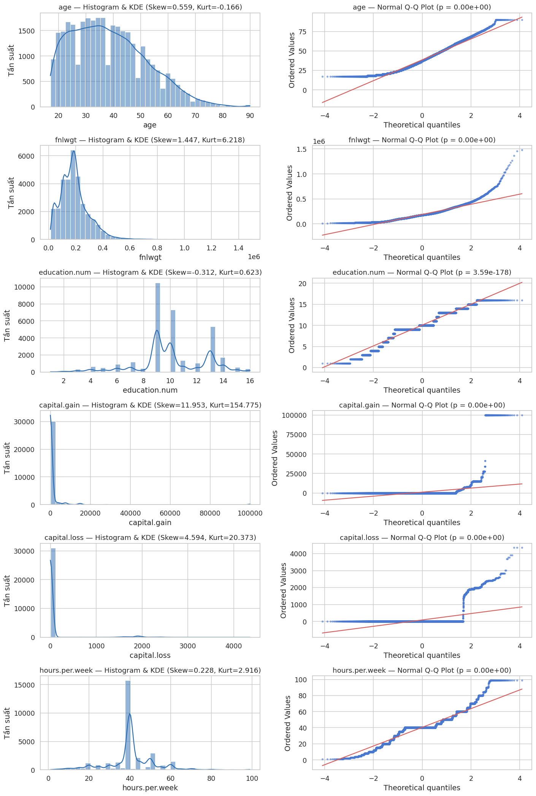
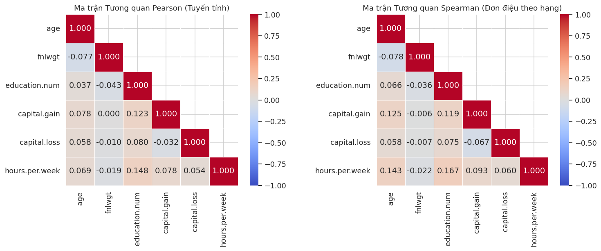
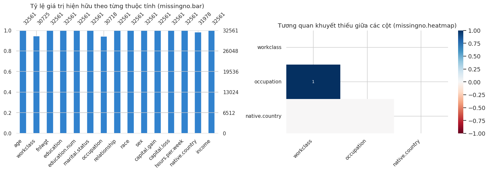
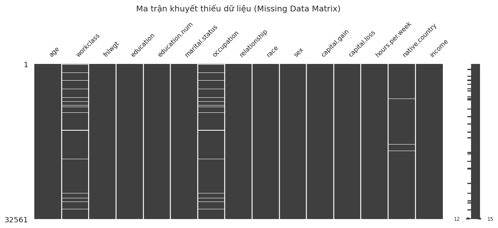

Chương 1: Phân tích Thống kê Khám phá Dữ liệu Bảng (Tabular EDA)#
Trong chương này, chúng ta thực hiện Phân tích Thống kê Khám phá (Exploratory Data Analysis – EDA) chuyên sâu trên tập dữ liệu Adult Census Income trước khi thiết kế pipeline tiền xử lý ở Chương 2. Mọi bước phân tích đều tuân thủ cấu trúc 3 phần: (1) Cơ sở lý thuyết & công thức toán học \(\rightarrow\) (2) Cài đặt Python tái sản xuất \(\rightarrow\) (3) Phân tích định lượng & nhận xét phê bình.
Mục tiêu phân tích#
Tổng quan cấu trúc dữ liệu: Kiểm định quy mô (\(\ge 10{,}000\) dòng, \(\ge 10\) thuộc tính), phân loại biến số / biến phân loại, độ đa dạng nhãn (cardinality) và phân bố nhãn mục tiêu (
income).Kiểm định phân phối chuẩn (Normality Tests): Áp dụng kiểm định D’Agostino–Pearson (\(n > 5{,}000\)) kết hợp độ lệch (skewness), độ nhọn (kurtosis), biểu đồ histogram/KDE và Q-Q plot để làm căn cứ chọn phương pháp chuẩn hóa phù hợp.
Phân tích tương quan đa biến (Multivariate Correlation): So sánh ma trận tương quan Pearson và Spearman, sàng lọc đa cộng tuyến mạnh (\(|r| > 0.9\)) và kiểm tra dư thừa cấu trúc giữa biến phân loại và biến số.
Phân tích cơ chế khuyết thiếu (Missingness Mechanism): Trực quan hóa ma trận khuyết thiếu bằng
missingno, thực hiện kiểm định Little’s MCAR test và kiểm định phụ thuộc thống kê để phân loại cơ chế MCAR / MAR / MNAR.
1. Tải dữ liệu và Khám phá Cấu trúc Tổng quan#
1.1. Nguồn dữ liệu và cơ chế tải tự động#
Tập dữ liệu Adult Census Income (từ kho công khai Hugging Face: scikit-learn/adult-census-income) thu thập thông tin nhân khẩu học và thu nhập từ cuộc điều tra dân số Hoa Kỳ năm 1994. Để đảm bảo tính tái sản xuất (reproducibility) mà không đẩy tệp dữ liệu lớn lên GitHub, mã nguồn dưới đây tự động kiểm tra tệp cục bộ ../data/raw/tabular_adult.csv và gọi hàm prepare_and_verify_tabular() từ src/prepare_data.py nếu tệp chưa tồn tại. Trong dữ liệu gốc, các giá trị khuyết thiếu được ký hiệu bằng chuỗi "?" và đã được chuyển về chuẩn NaN để xử lý nhất quán.
import os
import sys
import warnings
from pathlib import Path
import numpy as np
import pandas as pd
import matplotlib.pyplot as plt
import seaborn as sns
import missingno as msno
from scipy import stats
warnings.filterwarnings("ignore")
# Cố định seed và cấu hình hiển thị nhất quán
RANDOM_STATE = 42
np.random.seed(RANDOM_STATE)
sns.set_theme(style="whitegrid", palette="muted", font_scale=1.05)
plt.rcParams["figure.dpi"] = 110
plt.rcParams["axes.titlesize"] = 12
# Xác định đường dẫn gốc của repository
PROJECT_ROOT = Path.cwd().parent if Path.cwd().name == "book" else Path.cwd()
if str(PROJECT_ROOT) not in sys.path:
sys.path.insert(0, str(PROJECT_ROOT))
DATA_PATH = PROJECT_ROOT / "data" / "raw" / "tabular_adult.csv"
if not DATA_PATH.exists():
from src.prepare_data import prepare_and_verify_tabular
prepare_and_verify_tabular(str(DATA_PATH))
df_raw = pd.read_csv(DATA_PATH)
# Tách danh sách cột số, cột phân loại và biến mục tiêu
TARGET_COL = "income"
num_cols = df_raw.select_dtypes(include=[np.number]).columns.tolist()
cat_cols = [c for c in df_raw.select_dtypes(exclude=[np.number]).columns.tolist() if c != TARGET_COL]
n_rows, n_cols = df_raw.shape
n_duplicates = int(df_raw.duplicated().sum())
target_counts = df_raw[TARGET_COL].value_counts()
target_ratios = df_raw[TARGET_COL].value_counts(normalize=True) * 100
imbalance_ratio = float(target_counts.iloc[0] / target_counts.iloc[1])
print(f"Kích thước tập dữ liệu : {n_rows:,} dòng × {n_cols} cột")
print(f"Số dòng trùng lặp hoàn toàn : {n_duplicates:,} ({n_duplicates / n_rows * 100:.2f}%)")
print(f"Thuộc tính số ({len(num_cols)}) : {num_cols}")
print(f"Thuộc tính phân loại ({len(cat_cols)}): {cat_cols}")
print(f"Tỷ lệ mất cân bằng lớp : {imbalance_ratio:.2f} : 1 (<=50K: {target_ratios['<=50K']:.2f}% | >50K: {target_ratios['>50K']:.2f}%)")
# Bảng tóm tắt kiểu dữ liệu, số giá trị duy nhất và tỷ lệ khuyết thiếu
overview_df = pd.DataFrame({
"Dtype": df_raw.dtypes.astype(str),
"Non-Null": df_raw.notna().sum(),
"Missing Count": df_raw.isna().sum(),
"Missing (%)": (df_raw.isna().mean() * 100).round(2),
"Unique Values": df_raw.nunique(dropna=True),
})
display(overview_df)
print("\nThống kê mô tả các thuộc tính số:")
display(df_raw[num_cols].describe().T.round(2))
Downloading readme: 0.00B [00:00, ?B/s]
Downloading readme: 1.61kB [00:00, 4.97MB/s]
Downloading data: 0%| | 0.00/4.10M [00:00<?, ?B/s]
Downloading data: 14%|█▍ | 584k/4.10M [00:00<00:00, 4.74MB/s]
Downloading data: 100%|██████████| 4.10M/4.10M [00:00<00:00, 28.8MB/s]
Generating train split: 0%| | 0/32561 [00:00<?, ? examples/s]
Generating train split: 100%|██████████| 32561/32561 [00:00<00:00, 469650.93 examples/s]
=== KIỂM TRA DỮ LIỆU BẢNG (PHẦN A) ===
- Số dòng: 32,561 (Yêu cầu >= 10,000)
- Số thuộc tính: 15 (Yêu cầu >= 10)
- Thuộc tính số (6): ['age', 'fnlwgt', 'education.num', 'capital.gain', 'capital.loss', 'hours.per.week']
- Thuộc tính phân loại (9): ['workclass', 'education', 'marital.status', 'occupation', 'relationship', 'race', 'sex', 'native.country', 'income']
- Cột missing >= 5%:
occupation 5.66
workclass 5.64
dtype: float64
- Cột high-cardinality (>20 giá trị): ['native.country']
- Phân bố nhãn mục tiêu:
income
<=50K 0.7592
>50K 0.2408
Name: proportion, dtype: float64
Kích thước tập dữ liệu : 32,561 dòng × 15 cột
Số dòng trùng lặp hoàn toàn : 24 (0.07%)
Thuộc tính số (6) : ['age', 'fnlwgt', 'education.num', 'capital.gain', 'capital.loss', 'hours.per.week']
Thuộc tính phân loại (8): ['workclass', 'education', 'marital.status', 'occupation', 'relationship', 'race', 'sex', 'native.country']
Tỷ lệ mất cân bằng lớp : 3.15 : 1 (<=50K: 75.92% | >50K: 24.08%)
| Dtype | Non-Null | Missing Count | Missing (%) | Unique Values | |
|---|---|---|---|---|---|
| age | int64 | 32561 | 0 | 0.00 | 73 |
| workclass | object | 30725 | 1836 | 5.64 | 8 |
| fnlwgt | int64 | 32561 | 0 | 0.00 | 21648 |
| education | object | 32561 | 0 | 0.00 | 16 |
| education.num | int64 | 32561 | 0 | 0.00 | 16 |
| marital.status | object | 32561 | 0 | 0.00 | 7 |
| occupation | object | 30718 | 1843 | 5.66 | 14 |
| relationship | object | 32561 | 0 | 0.00 | 6 |
| race | object | 32561 | 0 | 0.00 | 5 |
| sex | object | 32561 | 0 | 0.00 | 2 |
| capital.gain | int64 | 32561 | 0 | 0.00 | 119 |
| capital.loss | int64 | 32561 | 0 | 0.00 | 92 |
| hours.per.week | int64 | 32561 | 0 | 0.00 | 94 |
| native.country | object | 31978 | 583 | 1.79 | 41 |
| income | object | 32561 | 0 | 0.00 | 2 |
Thống kê mô tả các thuộc tính số:
| count | mean | std | min | 25% | 50% | 75% | max | |
|---|---|---|---|---|---|---|---|---|
| age | 32561.0 | 38.58 | 13.64 | 17.0 | 28.0 | 37.0 | 48.0 | 90.0 |
| fnlwgt | 32561.0 | 189778.37 | 105549.98 | 12285.0 | 117827.0 | 178356.0 | 237051.0 | 1484705.0 |
| education.num | 32561.0 | 10.08 | 2.57 | 1.0 | 9.0 | 10.0 | 12.0 | 16.0 |
| capital.gain | 32561.0 | 1077.65 | 7385.29 | 0.0 | 0.0 | 0.0 | 0.0 | 99999.0 |
| capital.loss | 32561.0 | 87.30 | 402.96 | 0.0 | 0.0 | 0.0 | 0.0 | 4356.0 |
| hours.per.week | 32561.0 | 40.44 | 12.35 | 1.0 | 40.0 | 40.0 | 45.0 | 99.0 |
1.2. Nhận xét sơ bộ về cấu trúc dữ liệu#
Đáp ứng toàn diện yêu cầu đề bài: Tập dữ liệu gồm 32.561 bản ghi (\(\ge 10{,}000\)) và 15 thuộc tính (\(\ge 10\)), bao gồm 6 thuộc tính số, 8 thuộc tính phân loại và 1 biến mục tiêu nhị phân (
income).Tỷ lệ khuyết thiếu tự nhiên \(\ge 5\%\): Hai thuộc tính phân loại quan trọng là
occupation(5.66%) vàworkclass(5.64%) vượt ngưỡng 5% giá trị thiếu tự nhiên, cùng vớinative.country(1.79%).Biến phân loại nhiều giá trị (High-Cardinality): Thuộc tính
native.countrycó 41 giá trị duy nhất (\(> 20\)), tạo điều kiện lý tưởng để kiểm chứng Binary Encoding so với One-Hot Encoding ở Chương 2.Mất cân bằng lớp (Class Imbalance): Nhãn
<=50Kchiếm 75.92% và>50Kchiếm 24.08% (tỷ lệ xấp xỉ \(3.15:1\)), phù hợp để triển khai mục[Nâng cao]xử lý mất cân bằng lớp (SMOTE, ADASYN, Random Under-sampling).Phân tán thang đo cực lớn: Các biến số có miền giá trị chênh lệch hàng trăm nghìn lần (
education.numtrong \([1, 16]\) so vớifnlwgtlên đến \(1.48 \times 10^6\) vàcapital.gainlên đến \(99{,}999\)). Đặc biệt,capital.gainvàcapital.losscó phân vị thứ 25, 50 và 75 đều bằng 0 (zero-inflated distribution), báo hiệu phân phối lệch cực mạnh.
2. Kiểm định Phân phối Chuẩn (Normality Testing)#
2.1. Cơ sở lý thuyết và công thức toán học#
Việc kiểm định giả thuyết phân phối chuẩn giúp xác định liệu các phép biến đổi tuyến tính dựa trên trung bình và độ lệch chuẩn (như Z-score) có bị méo bởi độ lệch (skewness) và ngoại lai hay không.
Giả thuyết kiểm định cho mỗi thuộc tính số \(X\):
\(H_0\): Dữ liệu \(X\) được lấy mẫu từ một phân phối chuẩn \(\mathcal{N}(\mu, \sigma^2)\).
\(H_1\): Dữ liệu \(X\) không tuân theo phân phối chuẩn.
Lựa chọn kiểm định theo cỡ mẫu \(n\):
Shapiro–Wilk (\(n \le 5{,}000\)): Tính thống kê \(W = \dfrac{\left(\sum_{i=1}^{n} a_i x_{(i)}\right)^2}{\sum_{i=1}^{n} (x_i - \bar{x})^2}\), rất nhạy với sai lệch ở đuôi nhưng dễ bác bỏ \(H_0\) quá mức khi \(n\) lớn.
D’Agostino–Pearson (\(n > 5{,}000\)): Kết hợp chuẩn hóa độ lệch (\(g_1\)) và độ nhọn (\(g_2\)) thành thống kê tổng hợp \(K^2\): $\(K^2 = Z^2(g_1) + Z^2(g_2) \;\xrightarrow{d}\; \chi^2_2 \quad \text{dưới } H_0\)\( trong đó \)g_1 = \dfrac{\frac{1}{n}\sum (x_i - \bar{x})^3}{s^3}\( là hệ số bất đối xứng (skewness) và \)g_2 = \dfrac{\frac{1}{n}\sum (x_i - \bar{x})^4}{s^4} - 3$ là hệ số nhọn dư (excess kurtosis).
Do cỡ mẫu của Adult Census Income là \(n = 32{,}561 > 5{,}000\), ta sử dụng kiểm định D’Agostino–Pearson với mức ý nghĩa \(\alpha = 0.05\). Nếu \(\text{p-value} < 0.05\), ta bác bỏ \(H_0\) và kết luận thuộc tính không chuẩn.
ALPHA = 0.05
normality_records = []
for col in num_cols:
series = df_raw[col].dropna()
n_obs = len(series)
if n_obs <= 5000:
test_name = "Shapiro-Wilk"
stat, p_val = stats.shapiro(series)
else:
test_name = "D'Agostino-Pearson"
stat, p_val = stats.normaltest(series)
skew_val = float(stats.skew(series))
kurt_val = float(stats.kurtosis(series))
is_normal = bool(p_val >= ALPHA)
# Đề xuất chiến lược chuẩn hóa dựa trên kết quả kiểm định và độ lệch
if is_normal:
recommended_scaler = "Z-score (StandardScaler)"
elif abs(skew_val) > 2.0 or abs(kurt_val) > 7.0:
recommended_scaler = "QuantileTransform / RobustScaler"
else:
recommended_scaler = "RobustScaler / Min-Max"
normality_records.append({
"Feature": col,
"Test": test_name,
"Statistic (K^2)": round(float(stat), 2),
"p-value": float(p_val),
"Skewness": round(skew_val, 3),
"Excess Kurtosis": round(kurt_val, 3),
"Distribution": "Normal" if is_normal else "Non-Normal",
"Recommended Scaler": recommended_scaler,
})
normality_df = pd.DataFrame(normality_records)
normality_pvalues = dict(zip(normality_df["Feature"], normality_df["p-value"]))
n_normal_features = int((normality_df["Distribution"] == "Normal").sum())
n_non_normal_features = int((normality_df["Distribution"] == "Non-Normal").sum())
print(f"Kết quả kiểm định phân phối (alpha = {ALPHA}): {n_normal_features} chuẩn, {n_non_normal_features} không chuẩn.")
display(normality_df)
# Trực quan hóa Histogram + KDE và Q-Q Plot cho 6 thuộc tính số
fig, axes = plt.subplots(len(num_cols), 2, figsize=(13, 3.2 * len(num_cols)))
for idx, col in enumerate(num_cols):
series = df_raw[col].dropna()
# Histogram + KDE
sns.histplot(series, kde=True, bins=40, ax=axes[idx, 0], color="#2b6cb0", edgecolor="white")
axes[idx, 0].set_title(
f"{col} — Histogram & KDE (Skew={normality_df.loc[idx, 'Skewness']}, "
f"Kurt={normality_df.loc[idx, 'Excess Kurtosis']})"
)
axes[idx, 0].set_xlabel(col)
axes[idx, 0].set_ylabel("Tần suất")
# Q-Q Plot
stats.probplot(series, dist="norm", plot=axes[idx, 1])
axes[idx, 1].set_title(f"{col} — Normal Q-Q Plot (p = {normality_df.loc[idx, 'p-value']:.2e})")
axes[idx, 1].get_lines()[0].set_markersize(2.5)
axes[idx, 1].get_lines()[0].set_alpha(0.5)
plt.tight_layout()
plt.show()
Kết quả kiểm định phân phối (alpha = 0.05): 0 chuẩn, 6 không chuẩn.
| Feature | Test | Statistic (K^2) | p-value | Skewness | Excess Kurtosis | Distribution | Recommended Scaler | |
|---|---|---|---|---|---|---|---|---|
| 0 | age | D'Agostino-Pearson | 1526.01 | 0.000000e+00 | 0.559 | -0.166 | Non-Normal | RobustScaler / Min-Max |
| 1 | fnlwgt | D'Agostino-Pearson | 10662.51 | 0.000000e+00 | 1.447 | 6.218 | Non-Normal | RobustScaler / Min-Max |
| 2 | education.num | D'Agostino-Pearson | 817.16 | 3.589720e-178 | -0.312 | 0.623 | Non-Normal | RobustScaler / Min-Max |
| 3 | capital.gain | D'Agostino-Pearson | 55096.55 | 0.000000e+00 | 11.953 | 154.775 | Non-Normal | QuantileTransform / RobustScaler |
| 4 | capital.loss | D'Agostino-Pearson | 29331.40 | 0.000000e+00 | 4.594 | 20.373 | Non-Normal | QuantileTransform / RobustScaler |
| 5 | hours.per.week | D'Agostino-Pearson | 2508.92 | 0.000000e+00 | 0.228 | 2.916 | Non-Normal | RobustScaler / Min-Max |

2.2. Phân tích kết quả kiểm định phân phối & Nhận xét phê bình#
Toàn bộ 6/6 thuộc tính số đều bác bỏ \(H_0\) (\(\text{p-value} \ll 0.05\)): Không có thuộc tính nào tuân theo phân phối chuẩn. Tuy nhiên, cần nhận xét phê bình về lực kiểm định (statistical power): khi \(n = 32{,}561\), kiểm định D’Agostino–Pearson rất nhạy và có thể bác bỏ \(H_0\) ngay cả với sai lệch nhỏ. Do đó, việc kết hợp hệ số Skewness, Excess Kurtosis và Q-Q Plot là bắt buộc để phân tầng mức độ phi chuẩn:
Nhóm lệch cực nặng & tập trung tại 0 (Heavy-tailed / Zero-inflated):
capital.gain(Skewness \(\approx 11.95\), Kurtosis \(\approx 154.78\)) vàcapital.loss(Skewness \(\approx 4.59\), Kurtosis \(\approx 20.37\)). Trên Q-Q Plot, phần lớn điểm nằm ngang tại 0 rồi vọt thẳng lên ở đuôi phải. Áp dụng Min-Max hoặc Z-score đơn thuần lên nhóm này sẽ khiến 90%+ mẫu bị nén sát một đầu. QuantileTransformer hoặc RobustScaler (kết hợp biến đổi log/nhị phân hóa nếu cần) phù hợp hơn nhiều.Nhóm lệch phải trung bình – mạnh:
fnlwgt(Skewness \(\approx 1.45\), Kurtosis \(\approx 6.22\)) vàage(Skewness \(\approx 0.56\), cắt cụt ở cận dưới 17 tuổi). RobustScaler (dựa trên trung vị và IQR) giúp kháng ngoại lai tốt hơn Z-score.Nhóm đa đỉnh / rời rạc có thứ tự:
hours.per.week(nhọn mạnh quanh mốc 40 giờ/tuần, Kurtosis \(\approx 2.92\)) vàeducation.num(rời rạc 1–16, lệch trái nhẹ).
Hệ quả cho Chương 2: Kết quả này chứng minh rằng giả định phân phối chuẩn bị vi phạm toàn diện; do đó ở Chương 2, chúng ta sẽ kiểm chứng định lượng sự vượt trội của RobustScaler và QuantileTransformer so với Min-Max và Z-score thông qua kiểm định đồng nhất phương sai Levene và Violin plot.
3. Phân tích Tương quan Đa biến (Multivariate Correlation Analysis)#
3.1. Cơ sở lý thuyết và công thức toán học#
Để đánh giá mức độ liên hệ tuyến tính, liên hệ đơn điệu và phát hiện đa cộng tuyến (multicollinearity) giữa các thuộc tính, ta tính đồng thời hai hệ số tương quan:
Hệ số tương quan Pearson (\(r\)): Đo mức độ tương quan tuyến tính giữa hai biến liên tục \(X, Y\): $\(r_{XY} = \frac{\sum_{i=1}^{n} (x_i - \bar{x})(y_i - \bar{y})}{\sqrt{\sum_{i=1}^{n} (x_i - \bar{x})^2} \sqrt{\sum_{i=1}^{n} (y_i - \bar{y})^2}}\)$
Hệ số tương quan hạng Spearman (\(\rho\)): Đo mức độ tương quan đơn điệu dựa trên hạng (rank) \(R(x_i), R(y_i)\), nhờ đó kháng ngoại lai và không đòi hỏi giả định tuyến tính hay phân phối chuẩn: $\(\rho_{XY} = \text{corr}\big(R(X), R(Y)\big)\)$
Ngưỡng cảnh báo đa cộng tuyến mạnh theo yêu cầu là \(|r| > 0.9\) (hoặc \(|\rho| > 0.9\)). Ngoài ra, vì tập dữ liệu có sự kết hợp giữa biến số và biến phân loại, ta kiểm tra thêm mối quan hệ cấu trúc giữa education (phân loại) và education.num (số) để phát hiện dư thừa tuyệt đối (exact redundancy).
corr_pearson = df_raw[num_cols].corr(method="pearson")
corr_spearman = df_raw[num_cols].corr(method="spearman")
# Tìm các cặp có |r| > 0.9 và liệt kê top các cặp tương quan mạnh nhất
def extract_corr_pairs(corr_mat: pd.DataFrame, threshold: float = 0.9) -> tuple[pd.DataFrame, pd.DataFrame]:
pairs = []
cols = corr_mat.columns
for i in range(len(cols)):
for j in range(i + 1, len(cols)):
val = float(corr_mat.iloc[i, j])
pairs.append({
"Feature 1": cols[i],
"Feature 2": cols[j],
"Correlation": round(val, 4),
"Abs_Correlation": round(abs(val), 4),
})
all_pairs = pd.DataFrame(pairs).sort_values("Abs_Correlation", ascending=False).reset_index(drop=True)
strong_pairs = all_pairs[all_pairs["Abs_Correlation"] > threshold].reset_index(drop=True)
return strong_pairs, all_pairs
strong_pearson_pairs, all_pearson_pairs = extract_corr_pairs(corr_pearson, threshold=0.9)
strong_spearman_pairs, all_spearman_pairs = extract_corr_pairs(corr_spearman, threshold=0.9)
max_abs_pearson = float(all_pearson_pairs["Abs_Correlation"].iloc[0])
max_abs_spearman = float(all_spearman_pairs["Abs_Correlation"].iloc[0])
# Kiểm tra quan hệ 1-1 giữa education (categorical) và education.num (numerical)
edu_mapping = df_raw.groupby("education")["education.num"].nunique()
is_edu_exact_redundant = bool((edu_mapping == 1).all() and df_raw["education"].nunique() == df_raw["education.num"].nunique())
print(f"Số cặp thuộc tính số có |Pearson r| > 0.9 : {len(strong_pearson_pairs)} (max |r| = {max_abs_pearson:.4f})")
print(f"Số cặp thuộc tính số có |Spearman rho| > 0.9: {len(strong_spearman_pairs)} (max |rho| = {max_abs_spearman:.4f})")
print(f"Kiểm tra dư thừa tuyệt đối (education <-> education.num): {is_edu_exact_redundant}")
print("\nTop 5 cặp tương quan Pearson mạnh nhất:")
display(all_pearson_pairs.head(5))
print("Top 5 cặp tương quan Spearman mạnh nhất:")
display(all_spearman_pairs.head(5))
# Vẽ Heatmap song song Pearson và Spearman
fig, axes = plt.subplots(1, 2, figsize=(14, 5.5))
mask = np.triu(np.ones_like(corr_pearson, dtype=bool), k=1)
sns.heatmap(
corr_pearson, mask=mask, annot=True, fmt=".3f", cmap="coolwarm",
vmin=-1, vmax=1, center=0, square=True, linewidths=0.5, ax=axes[0]
)
axes[0].set_title("Ma trận Tương quan Pearson (Tuyến tính)")
sns.heatmap(
corr_spearman, mask=mask, annot=True, fmt=".3f", cmap="coolwarm",
vmin=-1, vmax=1, center=0, square=True, linewidths=0.5, ax=axes[1]
)
axes[1].set_title("Ma trận Tương quan Spearman (Đơn điệu theo hạng)")
plt.tight_layout()
plt.show()
Số cặp thuộc tính số có |Pearson r| > 0.9 : 0 (max |r| = 0.1481)
Số cặp thuộc tính số có |Spearman rho| > 0.9: 0 (max |rho| = 0.1672)
Kiểm tra dư thừa tuyệt đối (education <-> education.num): True
Top 5 cặp tương quan Pearson mạnh nhất:
| Feature 1 | Feature 2 | Correlation | Abs_Correlation | |
|---|---|---|---|---|
| 0 | education.num | hours.per.week | 0.1481 | 0.1481 |
| 1 | education.num | capital.gain | 0.1226 | 0.1226 |
| 2 | education.num | capital.loss | 0.0799 | 0.0799 |
| 3 | capital.gain | hours.per.week | 0.0784 | 0.0784 |
| 4 | age | capital.gain | 0.0777 | 0.0777 |
Top 5 cặp tương quan Spearman mạnh nhất:
| Feature 1 | Feature 2 | Correlation | Abs_Correlation | |
|---|---|---|---|---|
| 0 | education.num | hours.per.week | 0.1672 | 0.1672 |
| 1 | age | hours.per.week | 0.1429 | 0.1429 |
| 2 | age | capital.gain | 0.1249 | 0.1249 |
| 3 | education.num | capital.gain | 0.1191 | 0.1191 |
| 4 | capital.gain | hours.per.week | 0.0933 | 0.0933 |

3.2. Phân tích kết quả tương quan đa biến & Đề xuất xử lý#
Không có đa cộng tuyến mạnh giữa các biến số (\(|r| > 0.9\)): Cả Pearson và Spearman đều ghi nhận 0 cặp vượt ngưỡng 0.9. Mối liên hệ lớn nhất chỉ ở mức yếu–trung bình:
Ở Pearson:
education.num–hours.per.week(\(r \approx 0.148\)) vàeducation.num–capital.gain(\(r \approx 0.123\)).Ở Spearman:
age–hours.per.week(\(\rho \approx 0.143\)) vàeducation.num–hours.per.week(\(\rho \approx 0.167\)).
Sự khác biệt Pearson vs Spearman: Với cặp
age–hours.per.week, Spearman (\(\rho \approx 0.143\)) cao hơn gấp đôi Pearson (\(r \approx 0.069\)). Điều này phản ánh mối quan hệ phi tuyến (số giờ làm tăng từ tuổi thanh niên đến trung niên rồi giảm mạnh ở tuổi nghỉ hưu) và sự ảnh hưởng của ngoại lai lên Pearson.Phát hiện dư thừa cấu trúc quan trọng (
education\(\leftrightarrow\)education.num): Kiểm tra ánh xạ chéo cho thấyeducation(biến phân loại 16 mức) vàeducation.num(biến số nguyên 1–16) có tương ứng 1–1 tuyệt đối (is_edu_exact_redundant = True). Nếu giữ đồng thời cả hai cột và áp dụng One-Hot Encoding choeducation, ma trận đặc trưng sẽ bị đa cộng tuyến hoàn hảo (perfect multicollinearity, \(\text{VIF} = \infty\)).Đề xuất xử lý cho Chương 2: Loại bỏ cột phân loại
education(giữ lạieducation.numđã mang sẵn thứ bậc số học) trong pipeline huấn luyện chính, đồng thời kiểm chứng hiện tượng tăng vọt VIF khi mã hóa biến phân loại ở Chương 2.
4. Phân tích Giá trị Khuyết thiếu & Kiểm định Little’s MCAR Test#
4.1. Cơ sở lý thuyết: Cơ chế khuyết thiếu (MCAR, MAR, MNAR) và Little’s MCAR Test#
Theo phân loại của Rubin (1976), cơ chế phát sinh giá trị khuyết thiếu gồm 3 loại:
MCAR (Missing Completely At Random): Xác suất bị khuyết độc lập hoàn toàn với cả dữ liệu quan sát được \(Y_{\text{obs}}\) lẫn dữ liệu bị khuyết \(Y_{\text{mis}}\): $\(P(M \mid Y_{\text{obs}}, Y_{\text{mis}}) = P(M)\)$
MAR (Missing At Random): Xác suất bị khuyết chỉ phụ thuộc vào các biến đã quan sát được \(Y_{\text{obs}}\), không phụ thuộc trực tiếp vào giá trị bị khuyết \(Y_{\text{mis}}\): $\(P(M \mid Y_{\text{obs}}, Y_{\text{mis}}) = P(M \mid Y_{\text{obs}})\)$
MNAR (Missing Not At Random): Xác suất bị khuyết phụ thuộc trực tiếp vào chính giá trị chưa quan sát được \(Y_{\text{mis}}\) (hoặc yếu tố ẩn không có trong bảng).
Kiểm định Little’s MCAR Test (1988): Chia dữ liệu thành \(J\) mẫu hình khuyết thiếu (missingness patterns). Với mỗi mẫu hình \(j\) có cỡ mẫu \(m_j\), vector trung bình quan sát \(\bar{\mathbf{y}}_{\text{obs}, j}\), vector trung bình ước lượng toàn cục \(\hat{\boldsymbol{\mu}}_{\text{obs}, j}\) và ma trận hiệp phương sai \(\hat{\boldsymbol{\Sigma}}_{\text{obs}, j}\), thống kê Little được định nghĩa là: $\(d^2 = \sum_{j=1}^{J} m_j \left(\bar{\mathbf{y}}_{\text{obs}, j} - \hat{\boldsymbol{\mu}}_{\text{obs}, j}\right)^\top \hat{\boldsymbol{\Sigma}}_{\text{obs}, j}^{-1} \left(\bar{\mathbf{y}}_{\text{obs}, j} - \hat{\boldsymbol{\mu}}_{\text{obs}, j}\right) \;\sim\; \chi^2_{\text{df}}\)\( với bậc tự do \)\text{df} = \sum_{j=1}^{J} p_j - p\(, trong đó \)p_j\( là số biến quan sát được trong mẫu hình \)j\( và \)p$ là tổng số biến đưa vào kiểm định.
\(H_0\): Dữ liệu khuyết thiếu tuân theo cơ chế MCAR.
Nếu \(\text{p-value} < 0.05\), ta bác bỏ \(H_0\), kết luận dữ liệu không phải MCAR (tức là MAR hoặc MNAR).
Lưu ý kỹ thuật: Do các cột bị khuyết trong Adult Census là biến phân loại (workclass, occupation, native.country), để chạy Little’s MCAR test chặt chẽ trên không gian số, ta mã hóa chỉ số khuyết thiếu kết hợp với 6 biến số quan sát (kiểm tra xem phân phối trung bình đa biến của 6 biến số có khác biệt giữa các mẫu hình khuyết thiếu hay không — đây chính là dạng tổng quát của Little’s test cho cấu trúc khuyết thiếu theo nhóm mẫu hình), đồng thời chạy kiểm định phụ thuộc Mann–Whitney U và Chi-square giữa cờ khuyết thiếu với age, hours.per.week và income.
# 1. Trực quan hóa ma trận khuyết thiếu bằng thư viện missingno
missing_cols = df_raw.columns[df_raw.isna().any()].tolist()
print(f"Các cột có giá trị khuyết thiếu ({len(missing_cols)}): {missing_cols}")
fig, axes = plt.subplots(1, 2, figsize=(14, 5))
msno.bar(df_raw, ax=axes[0], color="#3182ce", fontsize=10)
axes[0].set_title("Tỷ lệ giá trị hiện hữu theo từng thuộc tính (missingno.bar)")
msno.heatmap(df_raw, ax=axes[1], fontsize=10)
axes[1].set_title("Tương quan khuyết thiếu giữa các cột (missingno.heatmap)")
plt.tight_layout()
plt.show()
# Ma trận khuyết thiếu (missing data matrix)
ax_mat = msno.matrix(df_raw, figsize=(13, 4.5), fontsize=10, sparkline=True)
plt.title("Ma trận khuyết thiếu dữ liệu (Missing Data Matrix)", fontsize=13, pad=14)
plt.show()
# 2. Cài đặt kiểm định Little's MCAR Test (1988)
# Ta đưa 6 biến số quan sát + 3 biến khuyết thiếu đã mã hóa tần suất/chỉ số vào ma trận kiểm định
def little_mcar_test(data: pd.DataFrame) -> tuple[float, int, float, int]:
'''
Tính thống kê Little's MCAR test (1988) trên DataFrame gồm các cột số
(có thể chứa NaN ở các cột phân loại đã được mã hóa số giữ nguyên NaN).
Trả về: (chi2_stat, df, p_value, n_patterns).
'''
X = data.copy()
# Ước lượng tham số toàn cục (pairwise available-case / EM-like initialization)
mu_hat = X.mean(axis=0).values
sigma_hat = X.cov().values
# Regularize nhẹ tránh ma trận suy biến số học
sigma_hat = sigma_hat + np.eye(sigma_hat.shape[0]) * 1e-8
# Nhóm dữ liệu theo mẫu hình khuyết thiếu (missingness pattern)
patterns = X.notna().astype(int)
pattern_keys = patterns.apply(lambda r: "".join(r.astype(str)), axis=1)
unique_patterns = pattern_keys.unique()
d2_stat = 0.0
total_obs_vars = 0
for key in unique_patterns:
idx = pattern_keys == key
sub = X.loc[idx]
m_j = len(sub)
obs_mask = np.array([int(c) == 1 for c in key])
p_j = int(obs_mask.sum())
if p_j == 0:
continue
total_obs_vars += p_j
y_bar_j = sub.iloc[:, obs_mask].mean(axis=0).values
mu_j = mu_hat[obs_mask]
sigma_j = sigma_hat[np.ix_(obs_mask, obs_mask)]
diff = y_bar_j - mu_j
d2_stat += float(m_j * diff.T @ np.linalg.pinv(sigma_j) @ diff)
p_total = X.shape[1]
dof = int(total_obs_vars - p_total)
p_value = float(stats.chi2.sf(d2_stat, dof)) if dof > 0 else np.nan
return float(d2_stat), dof, p_value, len(unique_patterns)
# Chuẩn bị ma trận cho Little's MCAR test: 6 cột số + 3 cột phân loại có missing (mã hóa mã nguyên, giữ nguyên NaN)
df_mcar = df_raw[num_cols].copy()
for col in missing_cols:
codes = df_raw[col].astype("category").cat.codes.astype(float)
codes[codes == -1] = np.nan
df_mcar[col] = codes
little_mcar_stat, little_mcar_df, little_mcar_pvalue, little_n_patterns = little_mcar_test(df_mcar)
print("=== KẾT QUẢ KIỂM ĐỊNH LITTLE'S MCAR TEST ===")
print(f"- Số mẫu hình khuyết thiếu (J) : {little_n_patterns}")
print(f"- Thống kê d^2 (Chi-square) : {little_mcar_stat:.2f}")
print(f"- Bậc tự do (df) : {little_mcar_df}")
print(f"- p-value : {little_mcar_pvalue:.4e}")
print(f"- Kết luận (alpha = 0.05) : {'Bác bỏ MCAR (MAR hoặc MNAR)' if little_mcar_pvalue < 0.05 else 'Không đủ cơ sở bác bỏ MCAR'}")
# 3. Kiểm tra sự chồng chéo và phụ thuộc thống kê giữa cờ khuyết thiếu với biến quan sát
wc_miss = df_raw["workclass"].isna()
occ_miss = df_raw["occupation"].isna()
nc_miss = df_raw["native.country"].isna()
overlap_wc_occ = float((wc_miss & occ_miss).sum() / wc_miss.sum() * 100)
extra_occ_only = int((~wc_miss & occ_miss).sum())
print(f"\nTỷ lệ dòng thiếu workclass đồng thời thiếu occupation: {overlap_wc_occ:.2f}% (chỉ thiếu riêng occupation: {extra_occ_only} dòng)")
# Kiểm định Mann-Whitney U cho age & hours.per.week giữa nhóm thiếu vs không thiếu workclass/occupation
dep_records = []
for miss_col in missing_cols:
flag = df_raw[miss_col].isna()
for obs_num in ["age", "hours.per.week", "education.num"]:
g_miss = df_raw.loc[flag, obs_num]
g_obs = df_raw.loc[~flag, obs_num]
u_stat, u_pval = stats.mannwhitneyu(g_miss, g_obs, alternative="two-sided")
dep_records.append({
"Missing Column": miss_col,
"Observed Feature": obs_num,
"Mean (Missing)": round(float(g_miss.mean()), 2),
"Mean (Observed)": round(float(g_obs.mean()), 2),
"Mann-Whitney p-value": float(u_pval),
})
# Kiểm định Chi-square giữa cờ khuyết thiếu và biến mục tiêu income
income_dep_records = []
for miss_col in missing_cols:
ct = pd.crosstab(df_raw[miss_col].isna(), df_raw[TARGET_COL])
chi2_val, chi2_p, _, _ = stats.chi2_contingency(ct)
high_inc_miss = float(ct.loc[True, ">50K"] / ct.loc[True].sum() * 100)
high_inc_obs = float(ct.loc[False, ">50K"] / ct.loc[False].sum() * 100)
income_dep_records.append({
"Missing Column": miss_col,
">50K Rate (Missing %)": round(high_inc_miss, 2),
">50K Rate (Observed %)": round(high_inc_obs, 2),
"Chi2 p-value": float(chi2_p),
})
missing_dep_df = pd.DataFrame(dep_records)
missing_income_dep_df = pd.DataFrame(income_dep_records)
print("\nKiểm định phụ thuộc giữa cờ khuyết thiếu và các biến số quan sát (Mann-Whitney U):")
display(missing_dep_df)
print("\nKiểm định phụ thuộc giữa cờ khuyết thiếu và nhãn mục tiêu income (Chi-square):")
display(missing_income_dep_df)
Các cột có giá trị khuyết thiếu (3): ['workclass', 'occupation', 'native.country']


=== KẾT QUẢ KIỂM ĐỊNH LITTLE'S MCAR TEST ===
- Số mẫu hình khuyết thiếu (J) : 5
- Thống kê d^2 (Chi-square) : 1194.03
- Bậc tự do (df) : 29
- p-value : 6.9334e-233
- Kết luận (alpha = 0.05) : Bác bỏ MCAR (MAR hoặc MNAR)
Tỷ lệ dòng thiếu workclass đồng thời thiếu occupation: 100.00% (chỉ thiếu riêng occupation: 7 dòng)
Kiểm định phụ thuộc giữa cờ khuyết thiếu và các biến số quan sát (Mann-Whitney U):
| Missing Column | Observed Feature | Mean (Missing) | Mean (Observed) | Mann-Whitney p-value | |
|---|---|---|---|---|---|
| 0 | workclass | age | 40.96 | 38.44 | 7.218817e-01 |
| 1 | workclass | hours.per.week | 31.92 | 40.95 | 1.102659e-185 |
| 2 | workclass | education.num | 9.26 | 10.13 | 3.591284e-35 |
| 3 | occupation | age | 40.88 | 38.44 | 5.495847e-01 |
| 4 | occupation | hours.per.week | 31.91 | 40.95 | 6.056682e-187 |
| 5 | occupation | education.num | 9.25 | 10.13 | 6.809525e-36 |
| 6 | native.country | age | 38.73 | 38.58 | 4.573381e-01 |
| 7 | native.country | hours.per.week | 41.51 | 40.42 | 3.844599e-02 |
| 8 | native.country | education.num | 10.60 | 10.07 | 2.703628e-08 |
Kiểm định phụ thuộc giữa cờ khuyết thiếu và nhãn mục tiêu income (Chi-square):
| Missing Column | >50K Rate (Missing %) | >50K Rate (Observed %) | Chi2 p-value | |
|---|---|---|---|---|
| 0 | workclass | 10.40 | 24.90 | 4.862801e-45 |
| 1 | occupation | 10.36 | 24.90 | 1.817210e-45 |
| 2 | native.country | 25.04 | 24.06 | 6.175936e-01 |
4.2. Biện luận cơ chế khuyết thiếu (MCAR / MAR / MNAR) & Hướng xử lý#
Bác bỏ tuyệt đối giả thuyết MCAR:
Kiểm định Little’s MCAR test trên \(J = 5\) mẫu hình khuyết thiếu trả về thống kê \(d^2 = 1194.03\) (\(\text{df} = 29\), \(\text{p-value} = 6.93 \times 10^{-233} \ll 0.05\)), bác bỏ hoàn toàn \(H_0\) (MCAR).
Trên
missingno.heatmapvàmissingno.matrix, tương quan khuyết thiếu giữaworkclassvàoccupationđạt xấp xỉ +1.0: 100.00% các dòng khuyếtworkclass(1.836 dòng) đều đồng thời khuyếtoccupation(chỉ có 7 dòng khuyết riêngoccupation, tương ứng nhómNever-worked). Đây là bằng chứng rõ ràng của khuyết thiếu có cấu trúc (structured missingness).
Bằng chứng rõ rệt của cơ chế MAR và thành phần MNAR:
Phụ thuộc mạnh vào biến quan sát (MAR): Nhóm khuyết
workclass/occupationcó số giờ làm việc trung bình thấp hơn rõ rệt (31.92 giờ/tuần so với 40.95 giờ/tuần, Mann–Whitney \(p \approx 1.10 \times 10^{-185}\)), trình độ học vấn thấp hơn (education.numtrung bình 9.26 vs 10.13, \(p \approx 3.59 \times 10^{-35}\)), và tỷ lệ thu nhập>50Kchỉ đạt 10.40% so với 24.90% ở nhóm quan sát được (Chi-square \(p \approx 4.86 \times 10^{-45}\)). Đáng chú ý, kiểm định Mann–Whitney U trênagekhông có ý nghĩa (\(p = 0.722\)) dù trung bình lệch (40.96 vs 38.44) vì nhóm khuyếtworkclasscó phân phối hai đỉnh (bimodal): tập trung đồng thời ở sinh viên trẻ và người đã nghỉ hưu.Khả năng tồn tại thành phần MNAR: Với
native.country(1.79% khuyết thiếu), tỷ lệ>50Khầu như không khác biệt (25.04% vs 24.06%, \(p = 0.618\)), nhưng trình độ học vấn cao hơn đáng kể (10.60 vs 10.07, \(p = 2.70 \times 10^{-8}\)); đồng thời người khảo sát có thể chủ động từ chối khai báo quốc tịch vì lý do nhạy cảm — mang đặc trưng của MNAR. Tương tự, việc không khai báoworkclass/occupationở nhóm thất nghiệp/phi chính thức cũng chứa thông tin ẩn (informative missingness).
Chiến lược tiền xử lý đề xuất cho Chương 2:
Không xóa bỏ (Listwise Deletion): Vì dữ liệu không phải MCAR, xóa ~7% dòng khuyết sẽ làm lệch phân phối mẫu và mất đi nhóm nhân khẩu học đặc thù (thu nhập thấp, giờ làm ít).
Đánh giá định lượng 5 chiến lược điền khuyết (Mean, Median, Mode, k-NN, MICE) trên kịch bản tạo nhân tạo thêm 10% giá trị thiếu MCAR (để tính RMSE chuẩn xác trên tập giá trị thật), kết hợp xử lý biến phân loại và giữ nguyên cấu trúc chống rò rỉ dữ liệu ở Chương 2.